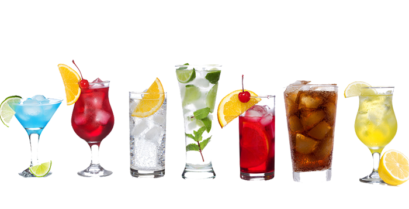

OORSPRONG VAN HET WOORD "COCKTAIL"
Er is discussie over wanneer de term voor het eerst werd gebruikt. Volgens deThe London Telegraph, het woord is voor het eerst te vinden in druk in een satirisch krantenartikel van 20 maart 1798 over wat moet zijn een hels feest geweest. Van bijzonder belang was het verslag van dranken geïmponeerd door William Pitt (de jongere) met "L'huile de Venus", "parfait amour", en "'hanenstaart (vulgair gember genoemd.)'" Sommigen betwisten of "cocktail" in dit artikel echt verwezen naar een alcoholische drank, of iets anders. Anderen wijzen op een artikel van 28 april 1803 uit The Farmer's Cabinet in Vermont, waar een cocktail te drinken werd beweerd dat het "uitstekend voor het hoofd" was.
Hoe dan ook, zeker in 1806 werd het woord gebruikt met zijn huidige betekenis. In de 13 mei editie van de krant, Balance en Columbian Repository, de redacteur definieerde een cocktail als: "een stimulerende drank samengesteld uit sterke drank van welke aard dan ook - suiker, water en bitters."
In het begin van de 17e eeuw werd gezegd dat een dier, met name een paard, met een gecoupeerde staart, een 'hanenstaart' had. Tegen de 19e eeuw hadden volbloeden, in tegenstelling tot andere paarden, geen gecoupeerde staarten, dus wanneer een gewone paard werd opgenomen in een race, zijn hanenstaart werd genoteerd - en werd een term die synoniem was met een vervalst paard. Omdat paardenraces en sterke drank samengaan als perziken en room, is dit de theorie stelt dat het woord "hanenstaart" al snel werd gebruikt om een vervalste geest aan te duiden. Een tweede theorie stelt dat de naam is afgeleid van de term 'cock tailings'. het resultaat van de praktijk van taverne-eigenaren die de droesem (tailings) van bijna lege vaten combineren samen tot één elixer dat tegen spotprijzen werd verkocht. Dit heeft alleen zin als je weet dat de spigot van een vat soms aangeduid als een 'haan'.
Wat speelt er in de Lounge
We worden vaak gevraagd naar de muziek die we in de lounge spelen, en geen wonder, het is geweldig spul. Speciaal voor u houden we hier op de site een lijst bij, wekelijks bijgewerkt. Genieten.
- Boeddha Bar, Claude Challe
- Wanneer het valt, nul 7
- Aarde 7, L.T.J. Bukem
- Le Roi Est Mort, Vive Le Roi!, Engima
- Muziek voor luchthavens, Brian Eno

Wekelijkse Specials

Citroenbries
De ultieme gezonde drank, dit elixer combineert plantaardige kruiden, mineralen en vitamines met een twist van citroen in een glad citruswonder dat houdt je immuunsysteem helemaal op gang dag en nacht.

Chai Chiller
Niet je traditionele chai, dit elixer mengt maté met chai kruiden en voegt een extra chocolade kick toe voor een cafeïnehoudende smaaksensatie op ijs.

Black Brain Brouwsel
Wil je je geheugen een boost geven? Probeer onze Black Brain Brew elixer, gemaakt met zwarte oolong thee en slechts een aanraking van espresso. Je hersenen zullen je dankbaar zijn voor de boost. Als je dit artikel leuk vond, kun je ook genieten van:Waar de term "Drank" vandaan komt.